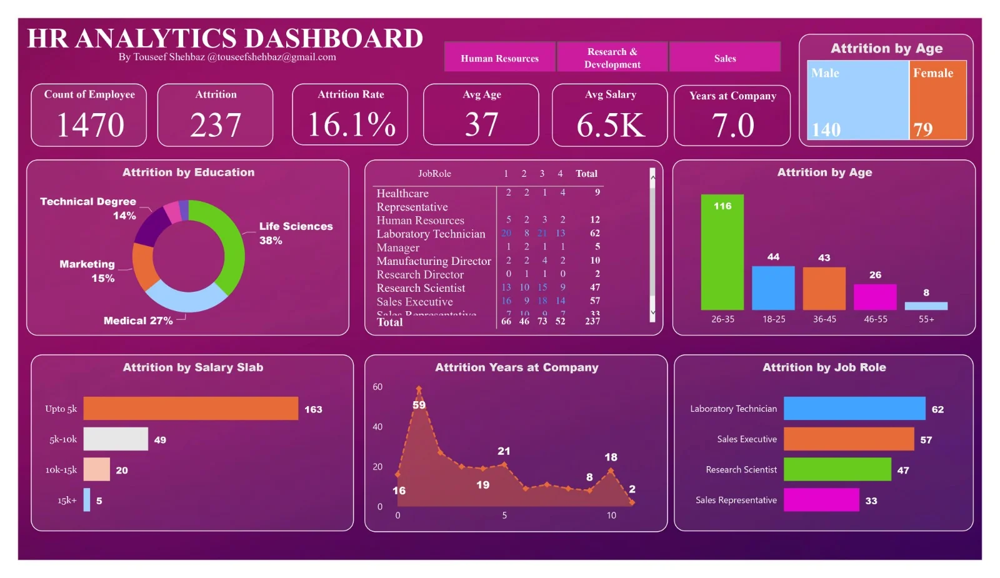
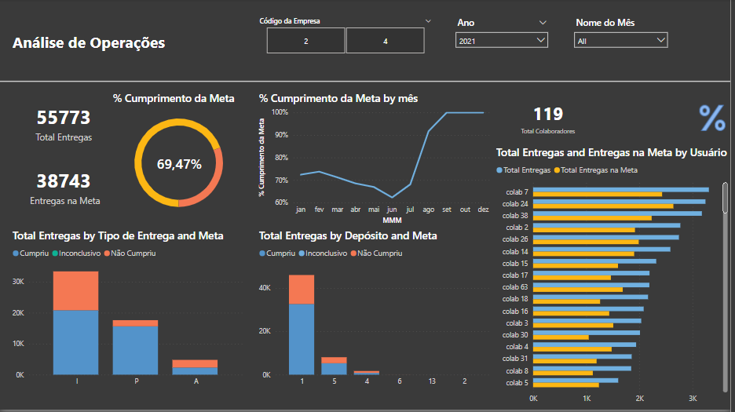

Meus Projetos em Power BI
Desenvolvimento de dashboards orientados às necessidades dos usuários e às demandas do negócio. Antes do início de cada projeto, é realizada uma análise detalhada e um levantamento de requisitos para compreender os objetivos e as necessidades da área solicitante. Após o desenvolvimento, são realizadas as validações e entregas necessárias, com ajustes e melhorias contínuas até que a solução atenda às expectativas dos usuários e forneça informações relevantes para apoiar a tomada de decisão.

Recursos Humanos
Dashboard voltado ao departamento de RH para acompanhamento.

Operacional
Dashboard voltado ao departamento de Operação para acompanhamento.

Tecnologia da Informação
Dashboard voltado ao departamento de TI para acompanhamento.
Meus Projetos em Grafana
Os projetos desenvolvidos no Grafana são voltados ao monitoramento em tempo real e à tomada de decisão rápida. Os dashboards permitem a visualização de alertas e indicadores importantes, como serviços que deixaram de funcionar ou equipamentos com pouco espaço de armazenamento. Além de facilitar o acompanhamento do ambiente, essas soluções auxiliam a equipe de Tecnologia da Informação na identificação de problemas e na tomada de ações mais rápidas, contribuindo para a redução do tempo de resposta e para a resolução eficiente dos incidentes.
Tecnologia da Informação
Dashboard voltado ao departamento de TI para acompanhamento.